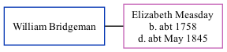

William Bridgeman
[ Home ] | [ Calendar ] | [ Surnames Index ] | [ Family History ]William Bridgeman, the husband of Elizabeth Measday (the five times great-aunt of Nigel Horne), and married Elizabeth at St Mary, Stodmarsh, Kent, England on Apr 27, 17761.
Citations
- Kent Marriages And Banns - Findmypast
Media
England Marriages 1538-1973 - R_848618435
Kent marriages and banns - GBPRS/CANT/M/97201581/1
England Marriages 1538-1973 - R_848121777
Family Tree
Generated by ged2site. Last updated on Nov 13, 2024